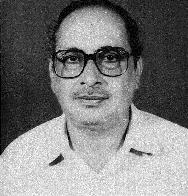

CREATION OF ORISSA PROVINCE
From 1568 Orissa lost her independence and was successively ruled by the Afghans, Mughals and Marathas till 1803 when the British conquered her in three phases. For proper administration the coastal districts of Balasore, Cuttack and Puri and the adjacent tracts were kept under Bengal; Ganjam and Koraput districts were attached to Madras and the Western region including Sambalpur and the Garjat states were placed under the Central Provinces. This political dismemberment jeopardized the language and culture of the Oriya-speaking people who had to face discrimination in the Bengali, Telugu and Hindi dominated regions as a linguistic minority. A time came when Oriya language, script and culture were threatened with extinction. This generated a strong feeling of race consciousness among the Oriya-speaking people leading to a language agitation in the 19th Century which culminated in the formation of separate Orissa province in 1936 on the basis of linguistic homogeneity.
The language agitation in the Orissa Division which began after 1868 due to the provocation of Kantilal Bandopadhyay who propounded that Oriya was not a separate language rather a modified version of Bengali, resulted in the growth of national consciousness in Balasore and Cuttack. The Oriya Vernacular Press fought assiduously to prove the distinctiveness of Oriya language and for retaining it as the medium of instruction. Similar agitation began in 1872 at Bhanjanagar by Janardan Das who demanded the amalgamation of Ganjam region with the Orissa Division, but without success. In 1895, the people of Sambalpur organized a sustained movement for the protection of Oriya language and culture against Hindi chauvinism. They finally demanded amalgamation with Orissa Division as a solution of the language crisis. This demand was accepted by the British Government in 1905 when Sambalpur and the adjacent Oriya speaking tracts were amalgamated with the Orissa Division under Bengal.
But the language crisis in Ganjam and Koraput could not be solved till 1936. The formation of Utkal Union Conference, popularly known as Utkal Sammilani in 1903 under the leadership of Madhusudan Das intensified the agitation for a separate identity on the basis of language. The linguistic survey of G.A.Grierson was helpful in this regard. Some British bureaucrats like Lord Northkote, H.G.Cooke, T.G.Rutherford and Lord Curzon, the then Viceroy were supportive of the cause; but the political unification of the dismembered Oriya-speaking tracts had to wait till 1928 when the Statutory Commission for Constitutional Reforms in India was appointed by the British Government. The Utkal Union Conference represented the Oriya cause before the Commission in a vigorous and consistent form to convince the Commission about the efficacy of a separate province for the Oriya-speaking people. On the recommendation of Statutory Committee, a Boundary Committee for the proposed Orissa Province was constituted. The Boundary Committee submitted a controversial report in 1931 suggesting a province which fell much below the expectation of Oriya people. Finally, a decision was taken in 1933 and the Hubbock Committee was appointed to suggest the method of administrative organization of the new province. The separate Orissa province was created on 1st April 1936 to provide political identity to the Oriya-speaking people. The language agitation of the 19th Century aimed at safeguarding Oriya culture, finally achieved the political goal in 1936; it was a Dream coming true.
--
Your comments are always welcome...

Prabodh Kumar Mishra


| This Page Has Been Accessed | Times Since |
|---|
was last updated on :